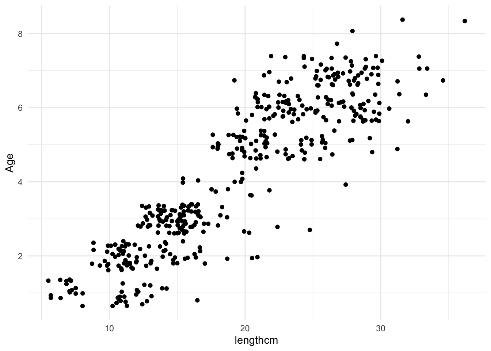
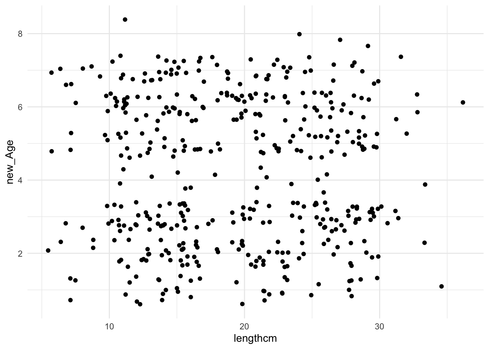
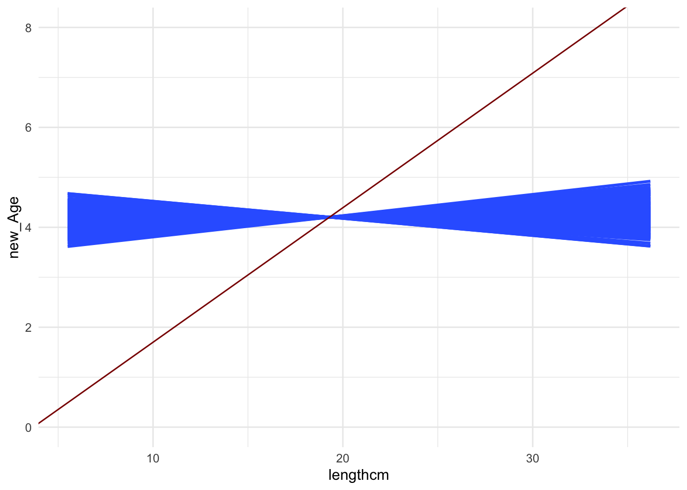
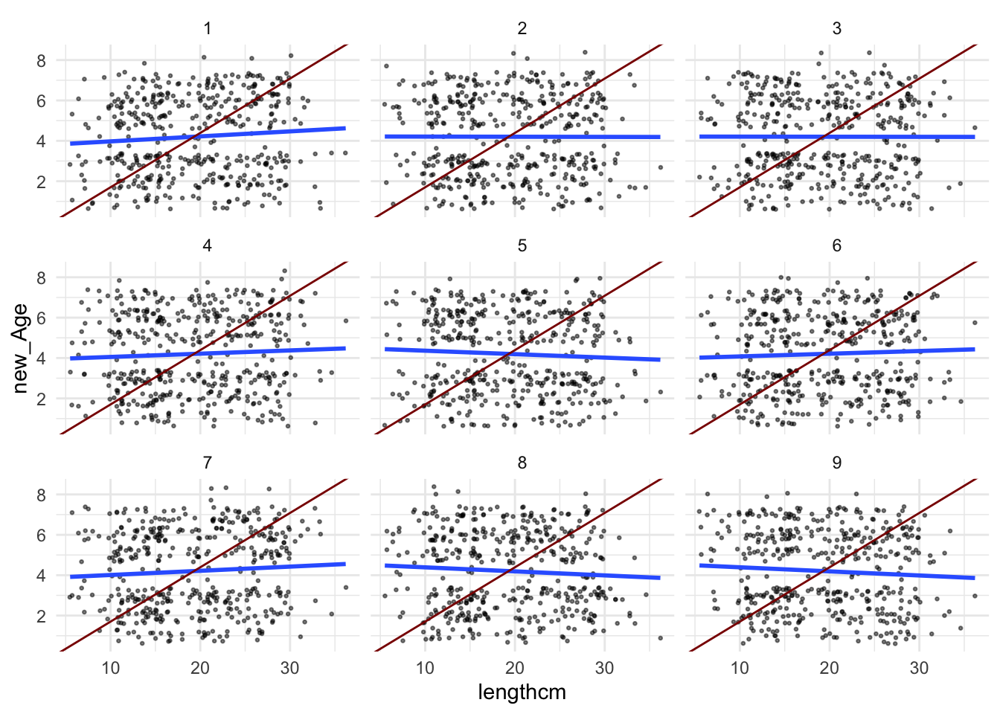
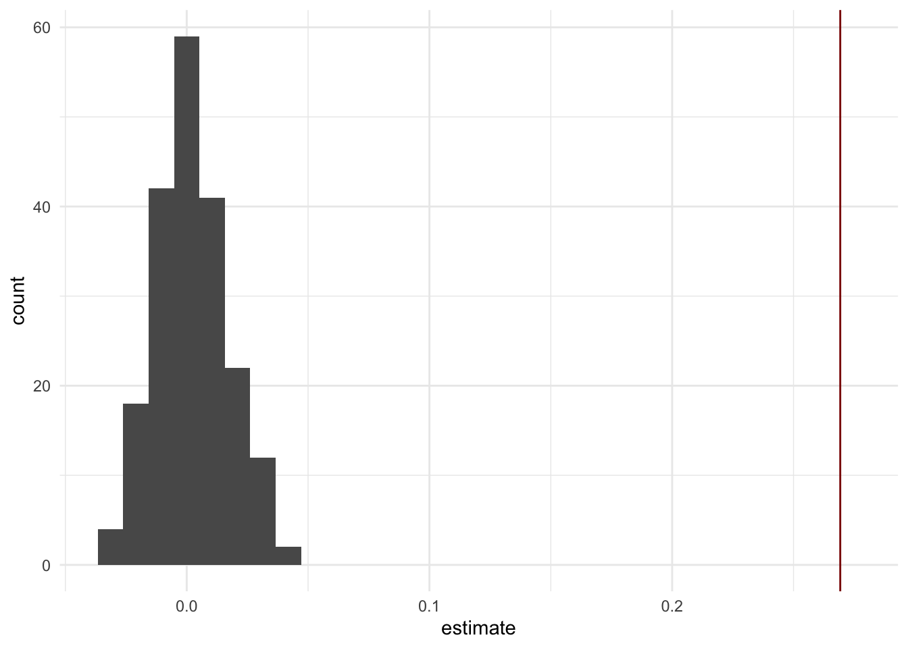
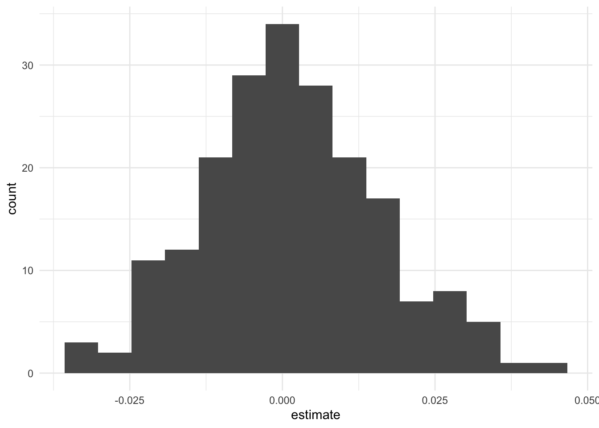

library(alr4) #for data
library(tidyverse) #for plotting and summarizing
library(ggridges) #for ridge plots
library(ggmosaic) #for mosaic plots
library(moderndive) #for nice model output
library(broom) #for nice model output
library(infer) #for making inferences about models
theme_set(theme_minimal()) #changes the theme of ggplots to theme_minimal, my personal favorite
GOAL:
By the end of these notes and activities, you should be able to perform the following tasks.
- Correctly set up a hypothesis test.
- Simulate the distribution of an estimated model coefficient when the null hypothesis is true.
- Compute the p-value using the simulated distribution.
- Use model output to make conclusions about a hypothesis test.
Remember that our goal of building models is usually to model the real world. In the end, we would like to know if our model is right. Answering that question is nearly impossible since we don’t know the real world model … hence the reason we are building this model in the first place.
Instead, we will will set out to make a decision between two competing theories. In our models, the competing theories are usually: 1. \(\beta_i=0\) vs. 2. \(\beta_i \ne 0\). Why are these interesting?
Hypothesis testing framework
- Define your two competing hypotheses - the null and alternative hypotheses.
- Set up a hypothetical world where the null hypothesis is true. This world is understood because we decide what it is. Specifically, we are interested in model coefficients, so we will create distributions of estimated coefficients we would expect to see when the null hypothesis is true.
- Then we compare our actual data to data we would expect to see in this hypothetical world when the null hypothesis is true. In this step we calculate a test statistic and a p-value. These give us concrete ways to compare what we have observed in our actual data to what we would expect to see in the hypothetical world when the null hypothsis is true.
- Make a decision. If the actual data and data we’d expect to see in the hypothetical world don’t match, then there is reason to doubt that the data are from this hypothetical world. (Later we’ll see that we either reject or don’t reject our null hypothesis)
Example
We are interested in knowing if there is a relationship between Age and lengthcm of smallmouth bass. From the plot of the sample data, it seems like that would be the case.
wblake2 <- wblake %>%
mutate(lengthcm = Length/10)
wblake2 %>%
ggplot(aes(x=lengthcm, y=Age)) +
geom_jitter()

fish_age_simple <- lm(Age ~ lengthcm, data=wblake2)
tidy(fish_age_simple)
I am going to set up a hypothetical world where there is no relationship between Age and lengthcm. For now, don’t worry about the code. I’ll explain that later. But, notice that if I (or you) run this over and over again, I get pictures that seem to show no relationship between Age and lengthcm.
wblake2 %>%
mutate(new_Age = sample(Age)) %>%
ggplot(aes(x=lengthcm, y=new_Age)) +
geom_jitter()

Now, I am going to fit models to the data in this hypothetical world and plot them (the blue lines). Don’t worry about the code for now … we’ll discuss it later. The red line is the actual line fit to the sample of data. What do you notice?
set.seed(1119)
hypothetical_samples <-
wblake2 %>%
rep_sample_n(size = 439,
replace = FALSE,
reps = 200) %>%
group_by(replicate) %>%
mutate(new_Age = sample(Age)) %>%
ungroup()
hypothetical_samples %>%
ggplot(aes(x = lengthcm, y = new_Age, group = replicate)) +
geom_smooth(method = "lm", se = FALSE) +
geom_abline(intercept = -0.9930344, slope = 0.2692521, color = "darkred") +
ylim(0,8)

The plots below show more detail for nine of the lines.
hypothetical_samples %>%
filter(replicate<10) %>%
ggplot(aes(x = lengthcm, y = new_Age)) +
geom_jitter(size = .5, alpha = .5) +
geom_smooth(method = "lm", se = FALSE) +
geom_abline(intercept = -0.9930344, slope = 0.2692521, color = "darkred") +
facet_wrap(~replicate)
## `geom_smooth()` using formula 'y ~ x'

And we can examine the distribution of the slopes from the models fit to the data in this hypothetical world. The vertical line is the slope from the model fit to the original sample of data (from fish_age_simple).
This histogram/distribution simulates the sampling distribution of the slope in the hypothetical world, under the assumption that there is no relationship between the two variables.
hypothetical_samples %>%
group_by(replicate) %>%
do(lm(new_Age ~ lengthcm, data=.) %>% tidy()) %>%
ungroup() %>%
filter(term == "lengthcm") %>%
ggplot(aes(x=estimate)) +
geom_histogram(bins=30) +
geom_vline(xintercept = 0.2692521, color = "darkred")

YOUR TURN!
- What is an observation in the histogram above.
- What does this tell us about the slope from the sample data compared to what we’d expect to see in the hypothetical world where there is no relationship between
Age and lengthcm?
Logic and Language of Hypothesis Tests.
In the example above, it may seem weird that we decided to test the hypothesis that there is not a relationship between Age and lengthcm. Shouldn’t we hypothesize that there is a relationship, since that is what we believe to be true? It turns out the answer is no. Why? Logic!
Short YOUR TURN! tangent
Before jumping into hypothesis test logic, I think it is worthwhile to do a simpler logic example. First, let’s assume the statement “All statistics classes are fun” is true (it is, right?). I can re-write this statement as an if-else statement: “If a class is a statistics class, then it is fun.”
How could you finish the following statements so that they are true?
- If a class is fun, then ….
- If a class is NOT fun, then ….
- We assume that IF the hypothesis is true, THEN our statistic of interest (the slope, in the example above) follows some known distribution (like the sampling distribution we simulated which I plotted again below), ie. it’s a random draw from this distribution.

- Compare the observed value of the statistic (the slope from the sample data) to the known distribution. There are two possible outcomes:
Agreement: the observed statistic is a plausible outcome from the distribution of the statistic
Disagreement: the observed statistic is not a plausible outcome from the distribution of the statistic
- Draw a conclusion (see contrapositive)
- If the outcome is agreement, what can you logically conclude? In other words, if the statistic of interest follows some known distribution (ie. is a random draw from the hypothetical distribution), what can you conclude about the hypothesis? Specifically, is it logical to conclude that the hypothesis is true?
- If the outcome is disagreement, what can you logically conclude? In other words, if the statistic of interest does not follow some known distribution (ie. is not a random draw from the hypothetical distribution), what can you conclude about the hypothesis?
Thus, it is much more satisfying to be in disagreement with the hypothesis because then we can reject it! The hypothesis is really set up for us to obtain evidence to disagree with it. Since its role is to be disagreed with or “nullified”, it is given the name null hypothesis, or \(H_0\).
Criteria for Null hypotheses:
- Choose one that is interesting to reject since that is the only interesting conclusion we can make. This means they almost always take the form of no effect, like our example where there was no relationship or the slope was zero.
- The hypothesis needs to be specific in order to construct the distribution.
Example revisited
How did I set up a hypothetical world where there is no relationship between Age and lengthcm?
If there is no relationship between Age and lengthcm, then no matter the length, the plausible ages should be the same. Another way of saying this is that the distribution of ages should be the same no matter the length. That distribution of ages comes from our actual data.
Let’s more closely investigate the code that generated the “hypothetical world”. Discuss the code below.
set.seed(1119)
hypothetical_samples <-
wblake2 %>% #original sample of data
rep_sample_n(size = 439, #take samples of this size from the original sample
replace = FALSE, #without replacement
reps = 200) %>% #this many samples/ replicates of the process
group_by(replicate) %>% #for each replicate
mutate(new_Age = sample(Age)) %>% #shuffle/permute the Ages
ungroup() #ungroup the data
So, we end up with 200 samples of data where there IS NO relationship between Age (now called new_Age) and lengthcm - that’s the world where the NULL HYPOTHESIS is true!.
Then, for each sample, we fit the model new_Age ~ lengthcm and keep track of the estimated coefficient for lengthcm. Lastly, we make a histogram the estimated coefficients. So, if the null hypothesis is true, this is what the sampling distribution of slopes would look like.
hypothetical_samples %>% #200 samples of data from "hypothetical world" where there is no relationship
group_by(replicate) %>% #for each replicate/sample
do(lm(new_Age ~ lengthcm, data=.) %>% tidy()) %>% #fit this model
ungroup() %>% #ungroup the data
filter(term == "lengthcm") %>% #filter to only this term
ggplot(aes(x=estimate)) + #make a histogram of the estimated coefficients
geom_histogram(bins=15)
Does the slope from our sample data seem to agree or disagree with the null hypothesis? What do we conclude?
hypothetical_samples %>%
group_by(replicate) %>%
do(lm(new_Age ~ lengthcm, data=.) %>% tidy()) %>%
ungroup() %>%
filter(term == "lengthcm") %>%
ggplot(aes(x=estimate)) +
geom_histogram(bins=30) +
geom_vline(xintercept = 0.2692521, color = "darkred")
P-values
In the discussion about agreement and disagreement above, I didn’t mention any detail around how you might decide if the observed statistic is a plausible outcome from the distribution of the statistic. What counts as plausible? And how do we calculate it?
The p-value is the fraction of the distribution of the statistics when the null hypothesis is true that are more extreme (less likely) than the observed statistic from the sample. Conventially an observation is considered implausible when the p-value is less than .05.
How would you calculate the p-value using the simulated data?
We need to understand that “more extreme” means further into the tails of the distribution. So, in our example, that would mean further to the right of where the observed value lies. It also means further to the left of the negative of the observed value because that is equally as extreme. In other problems, we could have a negative observed slope so “more extrems” would be to the left of the observed value and to the right of the positive of the observed value. You need to take time to think about this.
Create a column/variable that indicates if the estimated slope is more extreme than the observed value. I do that below, creating a variable called more_extreme_than_actual. What values does this variable take?
hypothetical_samples %>%
group_by(replicate) %>%
do(lm(new_Age ~ lengthcm, data=.) %>% tidy()) %>%
ungroup() %>%
filter(term == "lengthcm") %>%
mutate(more_extreme_than_actual = estimate > 0.2692521)
- Compute the p-value by finding the proportion or fraction of the distribution of the statistics when the null hypothesis is true (the estimated coeffficients) that are more extreme (less likely) than the observed statistic from the sample. In the code below, inside the
summary() function, I compute the p-value in two different ways. You DO NOT need to do both as they are doing the exact same thing. The more_extreme_than_actual variable takes TRUE/FALSE values but those are treated as 1/0. So, taking the mean is giving the proportion that are more extreme. We double it (multiply by 2) to account for the equivalent extrem cases in the other direction.
hypothetical_samples %>%
group_by(replicate) %>%
do(lm(new_Age ~ lengthcm, data=.) %>% tidy()) %>%
ungroup() %>%
filter(term == "lengthcm") %>%
mutate(more_extreme_than_actual = estimate > 0.2692521) %>%
summarize(p_val = 2*sum(more_extreme_than_actual)/n(),
p_val2 = 2*mean(more_extreme_than_actual))
Using theory/R to find p-values
It might seem like a lot of work to conduct a hypothesis test. So far, I’ve made it seem like we have to set up the distribution of the coefficient when the null hypothesis is true every time we want to conduct a test. Thankfully, we don’t have to do this. Just like we didn’t need to use bootstrapping to find confidence intervals, statistical theory (and R) saves us!
R uses something called a test statistic to do the probability calculations.
What are test statistics?
They are a special kind of statistic that follows a known distribution (like a Normal distribution or its close cousin, the t-distribution). They are a function of the statistic we are interested in, for coefficients in models they are equal to the estimated coefficient divided by its standard error (at least when the \(H_0\) is that the true coefficient is zero).
When the null hypothesis is true, the test statistic follows a t-distribution, which for large sample sizes is extremely close to a normal distribution that is centered at 0 and has a standard deviation of 1.
Finding the probability that the test statistic is more extreme than the observed test statistic when the null hypothesis is true is equivalent to finding the probability that the slope is more extreme than the observed slope when the null hypothesis is true.
Let’s look at the regression table.
tidy(fish_age_simple)
The column called statistic is the test statistic. We can draw a picture of the observed test statistic in relation to what we would expect when the null hypothesis is true. The column called p.value is the p-value.
Note that this is doing what is called a two-sided test. This means that values are considered extreme on both sides of the distribution. So, even though we had a value that was far to the right of the distribution, values equally as far to the left would also be considered in this calculation. This has to do with the assumed alternative hypothesis, which I’ll talk about next.
The alternative hypothesis
In practice, scientists usually also have an alternative hypothesis, which is the hypothesis they actually hope is true. This is done for a few reasons:
To motivate the study.
To compute sample sizes necessary to achieve a certain power of a test (we won’t discuss that in this class, although it’s very important in experimental studies).
Notice that having an alternative might be nice for motivation but it isn’t really involved in the conclusion of the hypothesis test since our only choices are either to reject the null hypothesis or not to reject the null hypothesis.
When we make hypothesis tests, we write them like
\[
H_0: \text{parameter of interest = value} \\
H_a: \text{parameter of interest} \ne \text{value}
\]
For our fish example, we would write
\[
H_0: \beta_1 = 0 \\
H_a: \beta_1 \ne 0
\]
(or we could put a specific value in the alternative hypothesis that we think \(\beta_1\) might be equal to)
Then, we use the data to make our conclusion. We observe that \(\hat{\beta}_1 = 0.27\) and find the corresponding p-value to make our conclusion.
Summary of the process
- State \(H_0\) and \(H_a\).
- Select the threshold for a small enough p-value at which you will reject \(H_0\). This is calle \(\alpha\) and is commonly set at .05.
- Calculate a test statistic and corresponding p-value. This can be done using theory (R output) or simulation.
- Make a decision - reject or don’t reject \(H_0\).
- Put your decision in the context of the data!
YOUR TURN!
Often, we have more than one variable in our model. For example with the fish data, we may also use the size of their scale to predice their age. What are the hypotheses being tested for each of the coefficients (not the intercept) in the output below? How would you use simulation to compute the p-value? Do you get a similar result to when you use the regression table directly?
fish_mod2 <- lm(Age ~ lengthcm + Scale,
data=wblake2)
tidy(fish_mod2)
The data below were collected from ratemyprofessor.com. See more by typing Rateprof into the help search. What is the hypothesis? What does the p-value for the gendermale term tell you? What would you conclude?
lm.rateprof.pep <- lm(quality ~ gender,
data=Rateprof)
tidy(lm.rateprof.pep)
BTW, most students in an introductory stats course would learn how to do this using a “Two Sample T-Test”. So, you know how to do one. You just use linear models to do it.
